1. 引言
Java 的核心优势之一是借助 JVM 内置的垃圾收集器（或简称 GC）的自动内存管理。GC 隐式地负责分配和释放内存，因此能够处理大多数内存泄漏问题。
尽管 GC 有效地处理了很大一部分内存，但它不能保证针对内存泄漏的万无一失的解决方案。 GC 非常聪明，但并非完美无缺。即使在有责任心的开发人员的应用程序中，内存泄漏仍然可能存在。
在某些情况下，应用程序会生成大量多余的对象，从而耗尽关键的内存资源，有时会导致整个应用程序的故障。
内存泄漏是 Java 中的真正问题。在本教程中，我们将看到导致内存泄漏的潜在原因是什么，如何在运行时识别它们，以及如何在应用程序中对其进行处理。

2. 什么是内存泄漏
内存泄漏指当堆中存在不再使用的对象，但是垃圾回收器无法将其从内存中删除的情况，因此不必要地对其进行了维护。
内存泄漏很严重，因为它会阻塞内存资源并随着时间的推移降低系统性能。如果不加以处理，该应用程序最终将耗尽其资源，最终以致命的 java.lang.OutOfMemoryError 终止。
堆内存中有两种不同类型的对象-已引用和未引用。引用对象是那些在应用程序中仍具有活动引用的对象，而未引用的对象则没有任何活动引用。
垃圾收集器会定期删除未引用的对象，但是它永远不会收集仍在引用的对象。这是可能发生内存泄漏的地方：

Symptoms of a Memory Leak
- 当应用程序长时间连续运行时，性能严重下降
- 应用程序中的
OutOfMemoryError堆错误 - 自发和奇怪的应用程序崩溃
- 该应用程序偶尔会用完连接对象
让我们仔细看看其中一些场景以及如何处理它们。
3. Java 中的内存泄漏类型
在任何应用程序中，由于多种原因都会发生内存泄漏。在本节中，我们将讨论最常见的那些。
3.1 静态字段的内存泄漏
可能导致潜在内存泄漏的第一种情况是大量使用静态变量。
在 Java 中，静态字段的寿命通常与正在运行的应用程序的整个寿命匹配（除非 ClassLoader 符合垃圾收集的条件）。
让我们创建一个填充静态列表的简单 Java 程序：
1 | public class StaticTest { |
现在，如果我们在程序执行过程中分析堆内存，那么我们将看到在调试点 1 和 2 之间，按预期，堆内存增加了。
但是，当我们在调试点 3 保留 populateList() 方法时，堆内存尚未被垃圾回收，正如我们在此 VisualVM 响应中看到的那样：
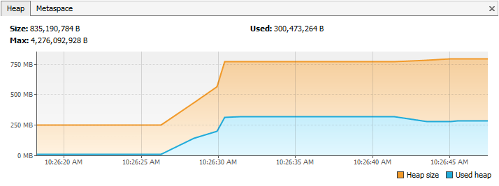
但是，在上面的程序的第 2 行中，如果我们仅删除关键字 static，那么它将对内存使用量带来巨大的变化，此 Visual VM 响应显示：
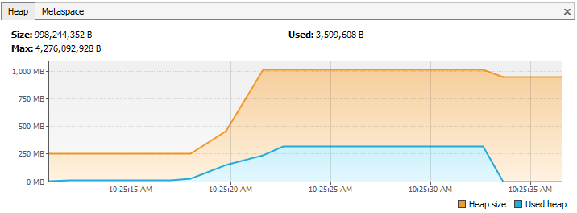
调试点之前的第一部分几乎与我们在静态情况下获得的结果相同。但是这一次我们离开 populateList() 方法之后，列表的所有内存都被垃圾回收了，因为我们没有对其的任何引用。
因此，我们需要非常注意静态变量的使用。如果将集合或大型对象声明为静态，那么它们会在应用程序的整个生命周期中保留在内存中，从而阻塞了本来可以在其他地方使用的重要内存。
如何预防？
- 尽量减少使用静态变量
- 使用单例时，依赖于延迟加载对象而不是急于加载的实现
3.2 未关闭资源
每当我们建立新连接或打开流时，JVM 就会为这些资源分配内存。一些示例包括数据库连接，输入流和会话对象。
忘记关闭这些资源可能会阻塞内存，从而使它们无法进入 GC。甚至在发生异常的情况下也会发生这种情况，该异常会阻止程序执行到达处理关闭这些资源的代码语句。
在任何一种情况下，资源留下的开放连接都会消耗内存，如果我们不处理它们，它们可能会降低性能，甚至可能导致 OutOfMemoryError。
1 |
|
让我们看看从 URL 加载大文件时应用程序的内存情况：
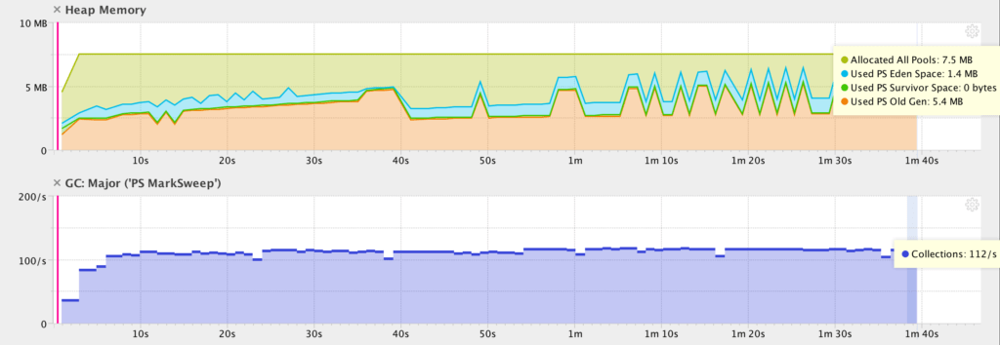
如我们所见，堆使用率随着时间逐渐增加 – 这是由于不关闭流而导致的内存泄漏的直接影响。
如何预防？
- 始终使用
finally块关闭资源 - 关闭资源的代码（即使在
finally块中）本身也不应该有任何异常 - 使用
Java 7+时，我们可以利用try-with-resources块
3.3 equals 和 hashcode() 实现不当
在定义新类时，一个非常普遍的疏忽是没有为 equals() 和 hashCode() 方法编写适当的重写方法。
HashSet 和 HashMap 在许多操作中使用这些方法，如果未正确覆盖它们，则它们可能成为潜在内存泄漏问题的根源。
让我们以一个简单的 Person 类为例，并将其用作 HashMap 中的键：
1 | public class Person { |
现在，我们将重复的 Person 对象插入使用此键的 Map 中。
请记住，Map 不能包含重复的键：
1 |
|
在这里，我们使用 Person 作为键。由于 Map 不允许使用重复的键，因此，作为键插入的大量重复的 Person 对象不应增加内存。
但是，由于我们尚未定义适当的 equals() 方法，因此重复的对象堆积并增加了内存，这就是为什么我们在内存中看到多个对象的原因。为此，VisualVM 中的堆内存如下所示：
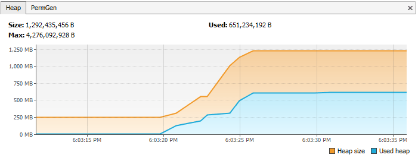
但是，如果我们正确地重写了equals() 和 hashCode() 方法，则此 Map 中将仅存在一个 Person 对象。
1 | public class Person { |
正确覆盖 equals() 和 hashCode() 之后，同一程序的堆内存如下所示：
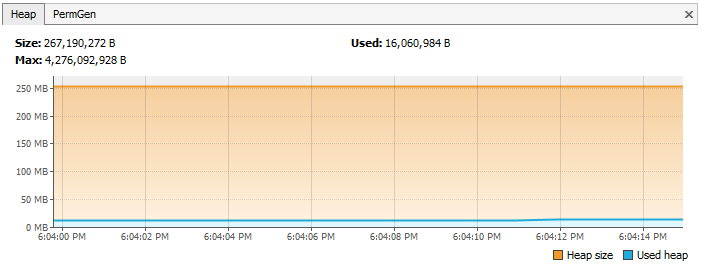
如果不重写这些方法，则发生内存泄漏的可能性非常高，因为 Hibernate 无法比较对象，并会使用重复的对象填充其缓存。
如何预防？
- 根据经验，定义新实体时，请始终覆盖
equals()和hashCode()方法 - 不仅要覆盖，而且还必须以最佳方式覆盖这些方法
3.4 使用非静态内部类
这是在非静态内部类（匿名类）的情况下发生的。为了进行初始化，这些内部类始终需要封闭类的实例。
默认情况下，每个非静态内部类都有对其包含类的隐式引用。如果我们在应用程序中使用此内部类的对象，则即使在包含类的对象超出范围后，也不会对其进行垃圾回收。
考虑一个类其中包含对大量笨重对象的引用，并且具有一个非静态内部类。现在，当我们创建内部类的对象时，内存模型如下所示：
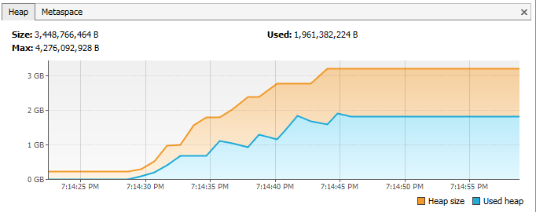
但是，如果仅将内部类声明为静态，则相同的内存模型如下所示：
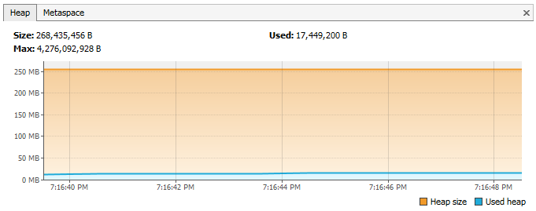
发生这种情况是因为内部类对象隐式持有对外部类对象的引用，从而使其成为垃圾回收的无效候选对象。对于匿名类，也会发生同样的情况。
如何预防？
- 如果内部类不需要访问包含的类成员，请考虑将其转换为静态类
3.5 通过 finalize() 方法
使用终结器是潜在的内存泄漏问题的另一个来源。每当覆盖类的 finalize() 方法时，该类的对象不会立即被垃圾收集。取而代之的是， GC 将它们排入队列以进行最终确定，这将在以后的某个时间点进行。
另外，如果用 finalize() 方法编写的代码不是很优化，并且终结器队列无法跟上 Java 垃圾收集器的速度，那么迟早，我们的应用程序注定会遇到 OutOfMemoryError。
为了说明这一点，让我们考虑一下我们有一个覆盖了 finalize() 方法的类，并且该方法需要一点时间来执行。
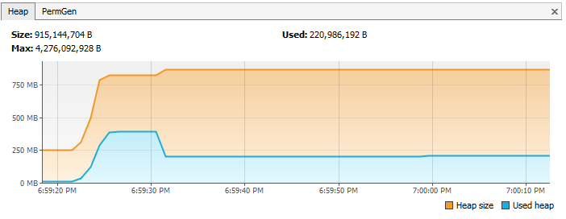
但是，如果只删除覆盖的 finalize() 方法，则同一程序将给出以下响应：
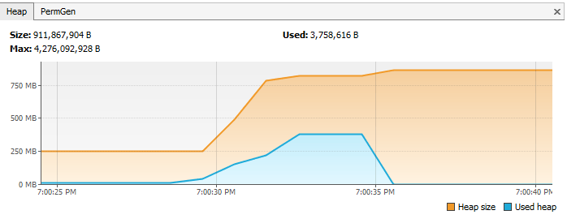
如何预防？
- 我们应该始终避免使用终结器
3.6 字符串常量池
在 Java 7 之前，JVM 将 Java 字符串池放置在永久代 PermGen 空间中，该空间的大小是固定的 - 无法在运行时扩展，并且不适合进行垃圾回收。
默认的字面量创建方法和 String 的 intern 方法会在字符串常量池保留字符串。
在 PermGen（而不是堆 Heap）中保留 String 的风险是，如果我们保留过多的 String，我们可能会从 JVM 中获得 OutOfMemory 错误。
从 Java 7 开始，Java 字符串池**存储在 Heap 空间中，该空间由 JVM 进行垃圾回收。**这种方法的优点是减少了 OutOfMemory 错误的风险，因为未引用的字符串将从池中删除，从而释放内存。
如何预防？
-
解决此问题的最简单方法是升级到最新的 Java 版本
-
或者要在 6 之前使用大量字符串或长字符串，请增加
PermGen空间的大小，以避免任何潜在的OutOfMemoryErrors：-XX:MaxPermSize=512m
3.7 使用 ThreadLocal
ThreadLocal 是一种使我们能够将状态隔离到特定线程，从而使我们能够实现线程安全的结构。
使用此构造时，每个线程将保留对其 ThreadLocal 变量副本的隐式引用，并将维护自己的副本，只要线程是活动的。
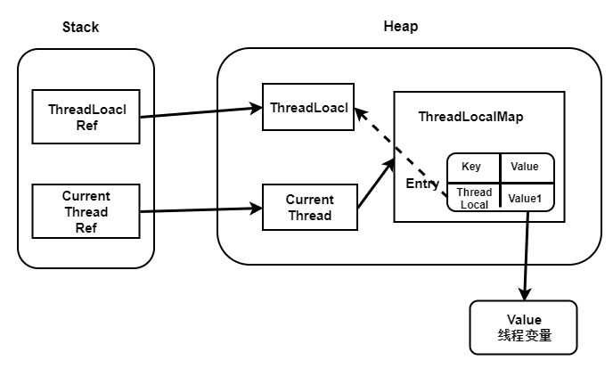
实线代表强引用，虚线代表弱引用（
WeakReference）JVM 进行垃圾回收时，无论内存是否充足，都会回收被弱引用关联的对象。在 java 中，用
java.lang.ref.WeakReference类来表示。可以在缓存中使用弱引用。
尽管有其优点，但使用 ThreadLocal 变量还是有争议的，因为如果使用不当，它们会导致内存泄漏。
ThreadLocal 导致内存泄漏
一旦持有线程不再存活，就应该对 ThreadLocals 进行垃圾回收。但是，将 ThreadLocals 与现代应用程序服务器一起使用时会出现问题。
现代应用程序服务器使用线程池来处理请求，而不是创建新请求（例如，对于 Apache Tomcat 为 Executor）。此外，他们还使用单独的类加载器。
由于应用程序服务器中的线程池使用线程重用的概念，因此它们永远不会被垃圾回收 - 而是被重用以满足另一个请求。
现在，如果任何类创建了一个 ThreadLocal 变量，但未明确删除它，那么即使在 Web 应用程序停止后，该对象的副本也将与工作线程一起保留，从而阻止垃圾回收该对象。
从上图中可以看出，ThreadLocalMap 使用 ThreadLocal 的弱引用作为 key，如果一个 ThreadLocal 不存在外部强引用时，Key(ThreadLocal) 势必会被 GC 回收，这样就会导致 ThreadLocalMap 中 key 为 null， 而 value 还存在着强引用，只有 thead 线程退出以后，value 的强引用链条才会断掉。
但如果当前线程再迟迟不结束的话，这些 key 为 null 的 Entry 的 value 就会一直存在一条强引用链：
Thread Ref -> Thread -> ThreaLocalMap -> Entry -> value
永远无法回收，造成内存泄漏。
如何预防？
-
在不再使用 ThreadLocal 时清理是一个好习惯 - ThreadLocal 提供了remove() 方法，该方法将删除此变量的当前线程值
-
不要使用
ThreadLocal.set(null)来清除值 - 实际上并不会清除值，而是查找与当前线程关联的Map并将键值对分别设置为当前线程和null -
最好将 ThreadLocal 视为需要在 finally 块中关闭的资源，以确保即使在发生异常的情况下也始终关闭该资源：
1
2
3
4
5
6
7try {
threadLocal.set(System.nanoTime());
//... further processing
}
finally {
threadLocal.remove();
}
3.8 过期引用
虽然绝大多数情况下我们在编写代码时不必考虑内存的回收，但是一旦我们自身管理了这些内存，垃圾回收可能就无法正常工作。让我们先来看一下一个简单的 Stack 类的实现，看看能不能找出内存泄漏的问题：
1 | public class Stack { |
那么它的问题在哪里？如果堆栈增大然后缩小，弹出的对象被外部程序引用，那么即使使用该堆栈的程序没有引用该对象，从堆栈弹出的对象也不会被垃圾回收。 这是因为虽然弹出了对象的引用，但是堆栈自身还保留对这些对象的过时引用 （obsolete reference）。所以垃圾回收器永远不会回收这部分对象。
垃圾收集语言中的内存泄漏（更适当地称为无意的对象保留 unintentional object retentions）是隐蔽的。 如果无意中保留了对象引用，那么不仅这个对象排除在垃圾回收之外，而且该对象引用的任何对象也是如此。 即使只有少数对象引用被无意地保留下来，也可以阻止垃圾回收机制对许多对象的回收，这对性能产生很大的影响。
此类问题的解决方法很简单：一旦引用过时，则将其清空。 就我们的 Stack 类而言，对某个项目的引用在从堆栈中弹出后便会过时。 正确的 pop 方法版本如下所示：
1 | public Object pop() { |
清空好处：如果它们以后又被错误地引用，程序立即抛出 NullPointerException 异常，而不是悄悄地做继续做错误的事情。尽可能快地发现程序中的错误是有好处的。
清空对象引用应该是例外而不是规范，不是所有的对象结束引用都需要手动清空，GC 自身能很好的做到，除非我们自身管理了内存时，才需要警惕。
在 JDK 中，已经有现成的 Stack 类供我们使用，来看看它是怎么实现 pop 的：
1 | public synchronized E pop() { |
如何预防？
- 如果我们自身管理了对象的内存，首先应该尽可能的将变量定义在狭窄的范围内
- 消除过时引用的最佳方法是让包含引用的变量超出范围
- 如果我们清楚知道该对象已经不再使用，可以手动清空对象使 GC 清楚可以被回收
3.9 未正确使用缓存
一旦将对象引用放入缓存中，很容易忘记它的存在，并且在它变得无关紧要之后，仍然保留在缓存中。对于这个问题有几种解决方案。如果你正好想实现一个缓存：只要在缓存之外存在对某个项（entry）的键（key）引用，那么这项就是明确有关联的，就可以用 WeakHashMap 来表示缓存；这些项在过期之后自动删除。记住，只有当缓存中某个项的生命周期是由外部引用到键（key）而不是值（value）决定时，WeakHashMap 才有用。这点和 ThreadLocal 很像。
更常见的情况是，缓存项有用的生命周期不太明确，随着时间的推移一些项变得越来越没有价值。在这种情况下，缓存应该偶尔清理掉已经废弃的项。这可以通过一个后台线程（也许是 ScheduledThreadPoolExecutor）或将新的项添加到缓存时顺便清理。LinkedHashMap 类使用它的 removeEldestEntry 方法实现了后一种方案。对于更复杂的缓存，可能直接需要使用 java.lang.ref。
如何预防？
- 使用成熟的缓存实现类
- 如果简单实用，可以使用
WeakHashMap或者定期清理缓存或设置过期时间等策略
3.10 监听器和其它回调
如果你实现了一个API，其客户端注册回调，但是没有显式地撤销注册回调，除非采取一些操作，否则它们将会累积。确保回调是垃圾收集的一种方法是只存储弱引用（weak references），例如，仅将它们保存在 WeakHashMap的键（key）中。
比如 JDK 中虚拟机状态监听器：
1 | class VMState { |
如何预防？
- 自身管理对象内存时，要正确实现对象的管理操作
- 使用弱引用以便不使用时让
GC回收
4. 处理内存泄漏的其他策略
尽管在处理内存泄漏时没有一种万能的解决方案，但是有一些方法可以使这些泄漏最小化。
4.1 启用分析
Java Profiler 是监视和诊断通过应用程序的内存泄漏的工具。他们分析了我们应用程序内部发生的事情 - 例如，内存分配方式。
使用分析器，我们可以比较不同的方法并找到可以最佳利用资源的领域。
在之前的例子中，我们一直使用 Java VisualVM。还有其它不同类型的 Profiler，例如 Mission Control，JProfiler，YourKit 和 Netbeans Profiler 等。
4.2 详细垃圾回收
通过启用详细的垃圾收集，我们可以跟踪 GC 的详细信息。为此，我们需要将以下内容添加到我们的 JVM 配置中：
-verbose:gc
通过添加此参数，我们可以看到 GC 内部发生的情况的详细信息：
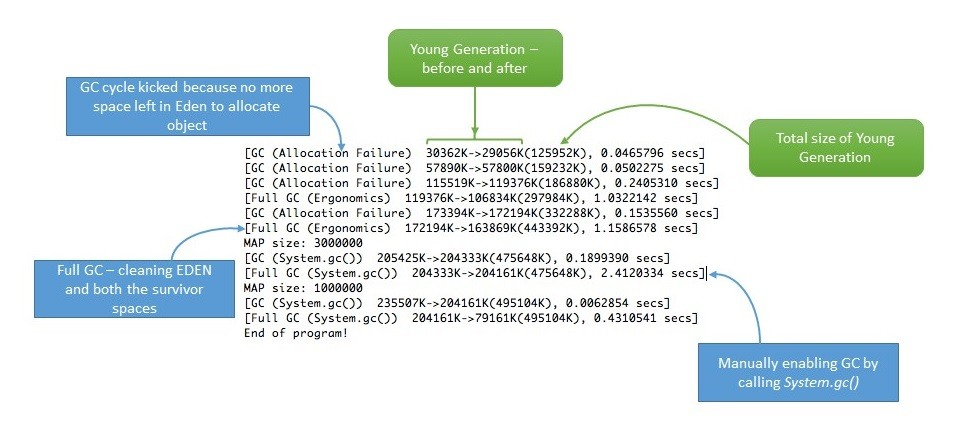
4.3 使用引用对象避免内存泄漏
我们还可以诉诸于 java.lang.ref 包内置的 Java 引用对象来处理内存泄漏。使用 java.lang.ref 包，而不是直接引用对象，通过使用对对象的特殊引用，使它们易于垃圾回收。
在引入引用类之前，只有强引用可用。例如，下面的代码行展示了一个强引用 obj：
1 | Object obj = new Object(); |
obj 引用存储在堆中的对象。只要 obj 引用存在，垃圾收集器就永远不会释放用于保存该对象的存储。一个对象可以被多种引用类型引用。
| 类型 | 对应类 | 特征 | 使用 |
|---|---|---|---|
| 强引用 | 强引用的对象被引用时不会被 GC 回收 | ||
| 软引用 | SoftReference | 如果物理内存充足则不会被 GC 回收，如果物理内存不充足则会被 GC 回收。 | 实现内存敏感型数据缓存 |
| 弱引用 | WeakReference | 一旦被 GC 扫描到则会被回收 | 用于实现规范化的映射。如果映射仅包含特定值的一个实例，则称为规范化。比如 WeakHashMap；解决 Lapsed Listener 问题，上面所述监听器回调问题 |
| 虚引用 | PhantomReference | 不会影响对象的生命周期，形同于无，任何时候都可能被 GC 回收 | **确定何时从内存中删除对象，**这有助于安排对内存敏感的任务。例如，我们可以等待一个大对象被删除再加载另一个对象。 **避免使用 finalize 方法，并改进 finalization 过程 |
| FinalReference | 用于收尾机制(finalization) |
4.4 基准测试
我们可以通过执行基准测试来衡量和分析 Java 代码的性能。这样，我们可以比较替代方法执行相同任务的性能。这可以帮助我们选择更好的方法，并且可以帮助我们节省内存。
4.5 代码评测
最后，我们通过最经典的，古老的方式来进行简单的代码演练。
在某些情况下，即使是这种简单的方法也可以帮助消除一些常见的内存泄漏问题。
5. 结论
内存泄漏很难解决，要找到它们需要对 Java 语言进行复杂的掌握和命令。在处理内存泄漏时，没有一种千篇一律的解决方案，因为泄漏可能通过各种多样的事件发生。
但是，如果我们采用最佳实践并定期执行严格的代码演练和分析，则可以最大程度地减少应用程序中内存泄漏的风险。
与往常一样，可以在 GitHub 上获得用于生成本教程中描述的 VisualVM 响应的代码段。